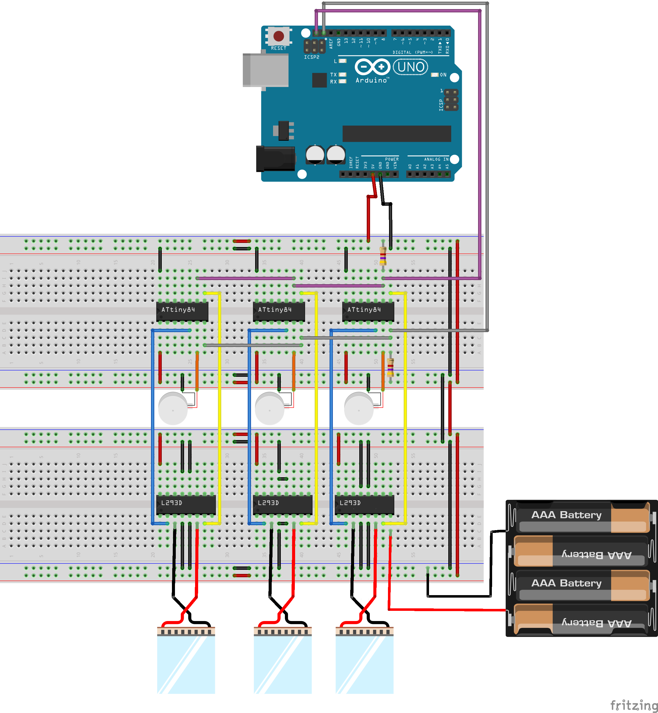
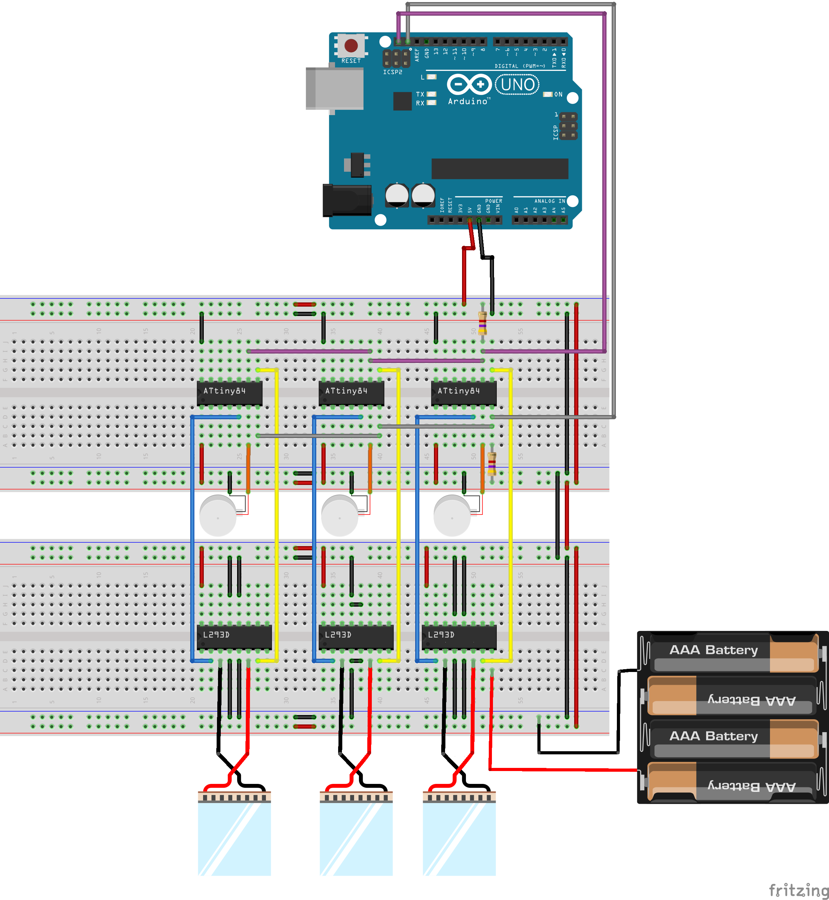

Research Question: How is emotional perception affected when vibrotactile touch patterns are combined with the thermal modality?
WHAT ARE TACTIBITS?
Touch is a primary human interaction channel. It can serve to not only facilitate interaction through tactile feedback but can also convey emotions and strengthen emotional ties between individuals.Its use is seldom considered in human-machine interaction as a means of communicating emotions. Tactibits are tactile modules that simulate the sense of touch.for conveying emotions during human-machine and human-human interactions via machines.
Supervisors: Dr Eric Lecolinet, Marc Teyssier at Telecom ParisTech, France
Duration:3.5 months
Skills used: Arduino, Unity, Hardware Prototyping, Experiment Design
PROCESS

WHAT I LEARNED
FINAL DESIGN


 
